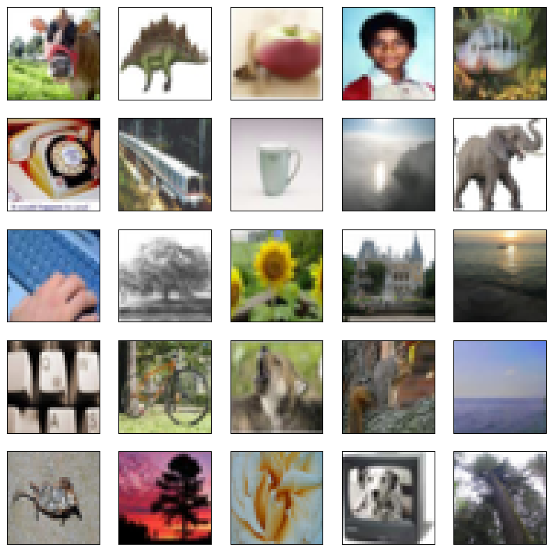
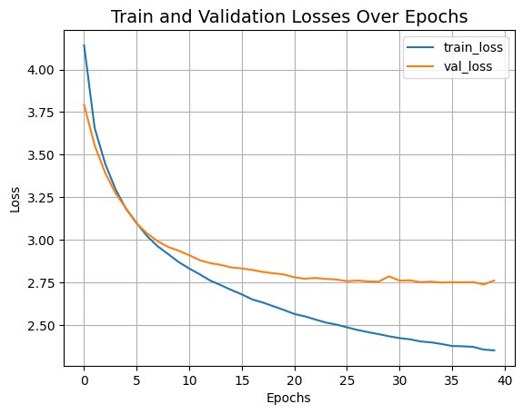

Image classification with Swin Transformers
Author: Rishit Dagli
Date created: 2021/09/08
Last modified: 2021/09/08
Description: Image classification using Swin Transformers, a general-purpose backbone for computer vision.

This example implements Swin Transformer: Hierarchical Vision Transformer using Shifted Windows by Liu et al. for image classification, and demonstrates it on the CIFAR-100 dataset.
Swin Transformer (Shifted Window Transformer) can serve as a general-purpose backbone for computer vision. Swin Transformer is a hierarchical Transformer whose representations are computed with shifted windows. The shifted window scheme brings greater efficiency by limiting self-attention computation to non-overlapping local windows while also allowing for cross-window connections. This architecture has the flexibility to model information at various scales and has a linear computational complexity with respect to image size.
This example requires TensorFlow 2.5 or higher.
Setup
import matplotlib.pyplot as plt
import numpy as np
import tensorflow as tf # For tf.data and preprocessing only.
import keras
from keras import layers
from keras import ops
Configure the hyperparameters
A key parameter to pick is the patch_size, the size of the input patches.
In order to use each pixel as an individual input, you can set patch_size to
(1, 1). Below, we take inspiration from the original paper settings for
training on ImageNet-1K, keeping most of the original settings for this example.
num_classes = 100
input_shape = (32, 32, 3)
patch_size = (2, 2) # 2-by-2 sized patches
dropout_rate = 0.03 # Dropout rate
num_heads = 8 # Attention heads
embed_dim = 64 # Embedding dimension
num_mlp = 256 # MLP layer size
# Convert embedded patches to query, key, and values with a learnable additive
# value
qkv_bias = True
window_size = 2 # Size of attention window
shift_size = 1 # Size of shifting window
image_dimension = 32 # Initial image size
num_patch_x = input_shape[0] // patch_size[0]
num_patch_y = input_shape[1] // patch_size[1]
learning_rate = 1e-3
batch_size = 128
num_epochs = 40
validation_split = 0.1
weight_decay = 0.0001
label_smoothing = 0.1
Prepare the data
We load the CIFAR-100 dataset through keras.datasets,
normalize the images, and convert the integer labels to one-hot encoded vectors.
(x_train, y_train), (x_test, y_test) = keras.datasets.cifar100.load_data()
x_train, x_test = x_train / 255.0, x_test / 255.0
y_train = keras.utils.to_categorical(y_train, num_classes)
y_test = keras.utils.to_categorical(y_test, num_classes)
num_train_samples = int(len(x_train) * (1 - validation_split))
num_val_samples = len(x_train) - num_train_samples
x_train, x_val = np.split(x_train, [num_train_samples])
y_train, y_val = np.split(y_train, [num_train_samples])
print(f"x_train shape: {x_train.shape} - y_train shape: {y_train.shape}")
print(f"x_test shape: {x_test.shape} - y_test shape: {y_test.shape}")
plt.figure(figsize=(10, 10))
for i in range(25):
plt.subplot(5, 5, i + 1)
plt.xticks([])
plt.yticks([])
plt.grid(False)
plt.imshow(x_train[i])
plt.show()
x_train shape: (45000, 32, 32, 3) - y_train shape: (45000, 100)
x_test shape: (10000, 32, 32, 3) - y_test shape: (10000, 100)

Helper functions
We create two helper functions to help us get a sequence of patches from the image, merge patches, and apply dropout.
def window_partition(x, window_size):
_, height, width, channels = x.shape
patch_num_y = height // window_size
patch_num_x = width // window_size
x = ops.reshape(
x,
(
-1,
patch_num_y,
window_size,
patch_num_x,
window_size,
channels,
),
)
x = ops.transpose(x, (0, 1, 3, 2, 4, 5))
windows = ops.reshape(x, (-1, window_size, window_size, channels))
return windows
def window_reverse(windows, window_size, height, width, channels):
patch_num_y = height // window_size
patch_num_x = width // window_size
x = ops.reshape(
windows,
(
-1,
patch_num_y,
patch_num_x,
window_size,
window_size,
channels,
),
)
x = ops.transpose(x, (0, 1, 3, 2, 4, 5))
x = ops.reshape(x, (-1, height, width, channels))
return x
Window based multi-head self-attention
Usually Transformers perform global self-attention, where the relationships between a token and all other tokens are computed. The global computation leads to quadratic complexity with respect to the number of tokens. Here, as the original paper suggests, we compute self-attention within local windows, in a non-overlapping manner. Global self-attention leads to quadratic computational complexity in the number of patches, whereas window-based self-attention leads to linear complexity and is easily scalable.
class WindowAttention(layers.Layer):
def __init__(
self,
dim,
window_size,
num_heads,
qkv_bias=True,
dropout_rate=0.0,
**kwargs,
):
super().__init__(**kwargs)
self.dim = dim
self.window_size = window_size
self.num_heads = num_heads
self.scale = (dim // num_heads) ** -0.5
self.qkv = layers.Dense(dim * 3, use_bias=qkv_bias)
self.dropout = layers.Dropout(dropout_rate)
self.proj = layers.Dense(dim)
num_window_elements = (2 * self.window_size[0] - 1) * (
2 * self.window_size[1] - 1
)
self.relative_position_bias_table = self.add_weight(
shape=(num_window_elements, self.num_heads),
initializer=keras.initializers.Zeros(),
trainable=True,
)
coords_h = np.arange(self.window_size[0])
coords_w = np.arange(self.window_size[1])
coords_matrix = np.meshgrid(coords_h, coords_w, indexing="ij")
coords = np.stack(coords_matrix)
coords_flatten = coords.reshape(2, -1)
relative_coords = coords_flatten[:, :, None] - coords_flatten[:, None, :]
relative_coords = relative_coords.transpose([1, 2, 0])
relative_coords[:, :, 0] += self.window_size[0] - 1
relative_coords[:, :, 1] += self.window_size[1] - 1
relative_coords[:, :, 0] *= 2 * self.window_size[1] - 1
relative_position_index = relative_coords.sum(-1)
self.relative_position_index = keras.Variable(
initializer=relative_position_index,
shape=relative_position_index.shape,
dtype="int",
trainable=False,
)
def call(self, x, mask=None):
_, size, channels = x.shape
head_dim = channels // self.num_heads
x_qkv = self.qkv(x)
x_qkv = ops.reshape(x_qkv, (-1, size, 3, self.num_heads, head_dim))
x_qkv = ops.transpose(x_qkv, (2, 0, 3, 1, 4))
q, k, v = x_qkv[0], x_qkv[1], x_qkv[2]
q = q * self.scale
k = ops.transpose(k, (0, 1, 3, 2))
attn = q @ k
num_window_elements = self.window_size[0] * self.window_size[1]
relative_position_index_flat = ops.reshape(self.relative_position_index, (-1,))
relative_position_bias = ops.take(
self.relative_position_bias_table,
relative_position_index_flat,
axis=0,
)
relative_position_bias = ops.reshape(
relative_position_bias,
(num_window_elements, num_window_elements, -1),
)
relative_position_bias = ops.transpose(relative_position_bias, (2, 0, 1))
attn = attn + ops.expand_dims(relative_position_bias, axis=0)
if mask is not None:
nW = mask.shape[0]
mask_float = ops.cast(
ops.expand_dims(ops.expand_dims(mask, axis=1), axis=0),
"float32",
)
attn = ops.reshape(attn, (-1, nW, self.num_heads, size, size)) + mask_float
attn = ops.reshape(attn, (-1, self.num_heads, size, size))
attn = keras.activations.softmax(attn, axis=-1)
else:
attn = keras.activations.softmax(attn, axis=-1)
attn = self.dropout(attn)
x_qkv = attn @ v
x_qkv = ops.transpose(x_qkv, (0, 2, 1, 3))
x_qkv = ops.reshape(x_qkv, (-1, size, channels))
x_qkv = self.proj(x_qkv)
x_qkv = self.dropout(x_qkv)
return x_qkv
The complete Swin Transformer model
Finally, we put together the complete Swin Transformer by replacing the standard
multi-head attention (MHA) with shifted windows attention. As suggested in the
original paper, we create a model comprising of a shifted window-based MHA
layer, followed by a 2-layer MLP with GELU nonlinearity in between, applying
LayerNormalization before each MSA layer and each MLP, and a residual
connection after each of these layers.
Notice that we only create a simple MLP with 2 Dense and 2 Dropout layers. Often you will see models using ResNet-50 as the MLP which is quite standard in the literature. However in this paper the authors use a 2-layer MLP with GELU nonlinearity in between.
class SwinTransformer(layers.Layer):
def __init__(
self,
dim,
num_patch,
num_heads,
window_size=7,
shift_size=0,
num_mlp=1024,
qkv_bias=True,
dropout_rate=0.0,
**kwargs,
):
super().__init__(**kwargs)
self.dim = dim # number of input dimensions
self.num_patch = num_patch # number of embedded patches
self.num_heads = num_heads # number of attention heads
self.window_size = window_size # size of window
self.shift_size = shift_size # size of window shift
self.num_mlp = num_mlp # number of MLP nodes
self.norm1 = layers.LayerNormalization(epsilon=1e-5)
self.attn = WindowAttention(
dim,
window_size=(self.window_size, self.window_size),
num_heads=num_heads,
qkv_bias=qkv_bias,
dropout_rate=dropout_rate,
)
self.drop_path = layers.Dropout(dropout_rate)
self.norm2 = layers.LayerNormalization(epsilon=1e-5)
self.mlp = keras.Sequential(
[
layers.Dense(num_mlp),
layers.Activation(keras.activations.gelu),
layers.Dropout(dropout_rate),
layers.Dense(dim),
layers.Dropout(dropout_rate),
]
)
if min(self.num_patch) < self.window_size:
self.shift_size = 0
self.window_size = min(self.num_patch)
def build(self, input_shape):
if self.shift_size == 0:
self.attn_mask = None
else:
height, width = self.num_patch
h_slices = (
slice(0, -self.window_size),
slice(-self.window_size, -self.shift_size),
slice(-self.shift_size, None),
)
w_slices = (
slice(0, -self.window_size),
slice(-self.window_size, -self.shift_size),
slice(-self.shift_size, None),
)
mask_array = np.zeros((1, height, width, 1))
count = 0
for h in h_slices:
for w in w_slices:
mask_array[:, h, w, :] = count
count += 1
mask_array = ops.convert_to_tensor(mask_array)
# mask array to windows
mask_windows = window_partition(mask_array, self.window_size)
mask_windows = ops.reshape(
mask_windows, [-1, self.window_size * self.window_size]
)
attn_mask = ops.expand_dims(mask_windows, axis=1) - ops.expand_dims(
mask_windows, axis=2
)
attn_mask = ops.where(attn_mask != 0, -100.0, attn_mask)
attn_mask = ops.where(attn_mask == 0, 0.0, attn_mask)
self.attn_mask = keras.Variable(
initializer=attn_mask,
shape=attn_mask.shape,
dtype=attn_mask.dtype,
trainable=False,
)
def call(self, x, training=False):
height, width = self.num_patch
_, num_patches_before, channels = x.shape
x_skip = x
x = self.norm1(x)
x = ops.reshape(x, (-1, height, width, channels))
if self.shift_size > 0:
shifted_x = ops.roll(
x, shift=[-self.shift_size, -self.shift_size], axis=[1, 2]
)
else:
shifted_x = x
x_windows = window_partition(shifted_x, self.window_size)
x_windows = ops.reshape(
x_windows, (-1, self.window_size * self.window_size, channels)
)
attn_windows = self.attn(x_windows, mask=self.attn_mask)
attn_windows = ops.reshape(
attn_windows,
(-1, self.window_size, self.window_size, channels),
)
shifted_x = window_reverse(
attn_windows, self.window_size, height, width, channels
)
if self.shift_size > 0:
x = ops.roll(
shifted_x, shift=[self.shift_size, self.shift_size], axis=[1, 2]
)
else:
x = shifted_x
x = ops.reshape(x, (-1, height * width, channels))
x = self.drop_path(x, training=training)
x = x_skip + x
x_skip = x
x = self.norm2(x)
x = self.mlp(x)
x = self.drop_path(x)
x = x_skip + x
return x
Model training and evaluation
Extract and embed patches
We first create 3 layers to help us extract, embed and merge patches from the images on top of which we will later use the Swin Transformer class we built.
# Using tf ops since it is only used in tf.data.
def patch_extract(images):
batch_size = tf.shape(images)[0]
patches = tf.image.extract_patches(
images=images,
sizes=(1, patch_size[0], patch_size[1], 1),
strides=(1, patch_size[0], patch_size[1], 1),
rates=(1, 1, 1, 1),
padding="VALID",
)
patch_dim = patches.shape[-1]
patch_num = patches.shape[1]
return tf.reshape(patches, (batch_size, patch_num * patch_num, patch_dim))
class PatchEmbedding(layers.Layer):
def __init__(self, num_patch, embed_dim, **kwargs):
super().__init__(**kwargs)
self.num_patch = num_patch
self.proj = layers.Dense(embed_dim)
self.pos_embed = layers.Embedding(input_dim=num_patch, output_dim=embed_dim)
def call(self, patch):
pos = ops.arange(start=0, stop=self.num_patch)
return self.proj(patch) + self.pos_embed(pos)
class PatchMerging(keras.layers.Layer):
def __init__(self, num_patch, embed_dim):
super().__init__()
self.num_patch = num_patch
self.embed_dim = embed_dim
self.linear_trans = layers.Dense(2 * embed_dim, use_bias=False)
def call(self, x):
height, width = self.num_patch
_, _, C = x.shape
x = ops.reshape(x, (-1, height, width, C))
x0 = x[:, 0::2, 0::2, :]
x1 = x[:, 1::2, 0::2, :]
x2 = x[:, 0::2, 1::2, :]
x3 = x[:, 1::2, 1::2, :]
x = ops.concatenate((x0, x1, x2, x3), axis=-1)
x = ops.reshape(x, (-1, (height // 2) * (width // 2), 4 * C))
return self.linear_trans(x)
Prepare the tf.data.Dataset
We do all the steps, which do not have trainable weights with tf.data. Prepare the training, validation and testing sets.
def augment(x):
x = tf.image.random_crop(x, size=(image_dimension, image_dimension, 3))
x = tf.image.random_flip_left_right(x)
return x
dataset = (
tf.data.Dataset.from_tensor_slices((x_train, y_train))
.map(lambda x, y: (augment(x), y))
.batch(batch_size=batch_size)
.map(lambda x, y: (patch_extract(x), y))
.prefetch(tf.data.experimental.AUTOTUNE)
)
dataset_val = (
tf.data.Dataset.from_tensor_slices((x_val, y_val))
.batch(batch_size=batch_size)
.map(lambda x, y: (patch_extract(x), y))
.prefetch(tf.data.experimental.AUTOTUNE)
)
dataset_test = (
tf.data.Dataset.from_tensor_slices((x_test, y_test))
.batch(batch_size=batch_size)
.map(lambda x, y: (patch_extract(x), y))
.prefetch(tf.data.experimental.AUTOTUNE)
)
Build the model
We put together the Swin Transformer model.
input = layers.Input(shape=(256, 12))
x = PatchEmbedding(num_patch_x * num_patch_y, embed_dim)(input)
x = SwinTransformer(
dim=embed_dim,
num_patch=(num_patch_x, num_patch_y),
num_heads=num_heads,
window_size=window_size,
shift_size=0,
num_mlp=num_mlp,
qkv_bias=qkv_bias,
dropout_rate=dropout_rate,
)(x)
x = SwinTransformer(
dim=embed_dim,
num_patch=(num_patch_x, num_patch_y),
num_heads=num_heads,
window_size=window_size,
shift_size=shift_size,
num_mlp=num_mlp,
qkv_bias=qkv_bias,
dropout_rate=dropout_rate,
)(x)
x = PatchMerging((num_patch_x, num_patch_y), embed_dim=embed_dim)(x)
x = layers.GlobalAveragePooling1D()(x)
output = layers.Dense(num_classes, activation="softmax")(x)
An NVIDIA GPU may be present on this machine, but a CUDA-enabled jaxlib is not installed. Falling back to cpu.
Train on CIFAR-100
We train the model on CIFAR-100. Here, we only train the model for 40 epochs to keep the training time short in this example. In practice, you should train for 150 epochs to reach convergence.
model = keras.Model(input, output)
model.compile(
loss=keras.losses.CategoricalCrossentropy(label_smoothing=label_smoothing),
optimizer=keras.optimizers.AdamW(
learning_rate=learning_rate, weight_decay=weight_decay
),
metrics=[
keras.metrics.CategoricalAccuracy(name="accuracy"),
keras.metrics.TopKCategoricalAccuracy(5, name="top-5-accuracy"),
],
)
history = model.fit(
dataset,
batch_size=batch_size,
epochs=num_epochs,
validation_data=dataset_val,
)
Epoch 1/40
352/352 ━━━━━━━━━━━━━━━━━━━━ 644s 2s/step - accuracy: 0.0517 - loss: 4.3948 - top-5-accuracy: 0.1816 - val_accuracy: 0.1396 - val_loss: 3.7930 - val_top-5-accuracy: 0.3922
Epoch 2/40
352/352 ━━━━━━━━━━━━━━━━━━━━ 626s 2s/step - accuracy: 0.1606 - loss: 3.7267 - top-5-accuracy: 0.4209 - val_accuracy: 0.1946 - val_loss: 3.5560 - val_top-5-accuracy: 0.4862
Epoch 3/40
352/352 ━━━━━━━━━━━━━━━━━━━━ 634s 2s/step - accuracy: 0.2160 - loss: 3.4910 - top-5-accuracy: 0.5076 - val_accuracy: 0.2440 - val_loss: 3.3946 - val_top-5-accuracy: 0.5384
Epoch 4/40
352/352 ━━━━━━━━━━━━━━━━━━━━ 620s 2s/step - accuracy: 0.2599 - loss: 3.3266 - top-5-accuracy: 0.5628 - val_accuracy: 0.2730 - val_loss: 3.2732 - val_top-5-accuracy: 0.5812
Epoch 5/40
352/352 ━━━━━━━━━━━━━━━━━━━━ 634s 2s/step - accuracy: 0.2841 - loss: 3.2082 - top-5-accuracy: 0.5988 - val_accuracy: 0.2878 - val_loss: 3.1837 - val_top-5-accuracy: 0.6050
Epoch 6/40
352/352 ━━━━━━━━━━━━━━━━━━━━ 617s 2s/step - accuracy: 0.3049 - loss: 3.1199 - top-5-accuracy: 0.6262 - val_accuracy: 0.3110 - val_loss: 3.0970 - val_top-5-accuracy: 0.6292
Epoch 7/40
352/352 ━━━━━━━━━━━━━━━━━━━━ 620s 2s/step - accuracy: 0.3271 - loss: 3.0387 - top-5-accuracy: 0.6501 - val_accuracy: 0.3292 - val_loss: 3.0374 - val_top-5-accuracy: 0.6488
Epoch 8/40
352/352 ━━━━━━━━━━━━━━━━━━━━ 615s 2s/step - accuracy: 0.3454 - loss: 2.9764 - top-5-accuracy: 0.6679 - val_accuracy: 0.3480 - val_loss: 2.9921 - val_top-5-accuracy: 0.6598
Epoch 9/40
352/352 ━━━━━━━━━━━━━━━━━━━━ 617s 2s/step - accuracy: 0.3571 - loss: 2.9272 - top-5-accuracy: 0.6801 - val_accuracy: 0.3522 - val_loss: 2.9585 - val_top-5-accuracy: 0.6746
Epoch 10/40
352/352 ━━━━━━━━━━━━━━━━━━━━ 624s 2s/step - accuracy: 0.3658 - loss: 2.8809 - top-5-accuracy: 0.6924 - val_accuracy: 0.3562 - val_loss: 2.9364 - val_top-5-accuracy: 0.6784
Epoch 11/40
352/352 ━━━━━━━━━━━━━━━━━━━━ 634s 2s/step - accuracy: 0.3796 - loss: 2.8425 - top-5-accuracy: 0.7021 - val_accuracy: 0.3654 - val_loss: 2.9100 - val_top-5-accuracy: 0.6832
Epoch 12/40
352/352 ━━━━━━━━━━━━━━━━━━━━ 622s 2s/step - accuracy: 0.3884 - loss: 2.8113 - top-5-accuracy: 0.7103 - val_accuracy: 0.3740 - val_loss: 2.8808 - val_top-5-accuracy: 0.6948
Epoch 13/40
352/352 ━━━━━━━━━━━━━━━━━━━━ 621s 2s/step - accuracy: 0.3994 - loss: 2.7718 - top-5-accuracy: 0.7239 - val_accuracy: 0.3778 - val_loss: 2.8637 - val_top-5-accuracy: 0.6994
Epoch 14/40
352/352 ━━━━━━━━━━━━━━━━━━━━ 634s 2s/step - accuracy: 0.4072 - loss: 2.7491 - top-5-accuracy: 0.7271 - val_accuracy: 0.3848 - val_loss: 2.8533 - val_top-5-accuracy: 0.7002
Epoch 15/40
352/352 ━━━━━━━━━━━━━━━━━━━━ 614s 2s/step - accuracy: 0.4142 - loss: 2.7180 - top-5-accuracy: 0.7344 - val_accuracy: 0.3880 - val_loss: 2.8383 - val_top-5-accuracy: 0.7080
Epoch 16/40
352/352 ━━━━━━━━━━━━━━━━━━━━ 614s 2s/step - accuracy: 0.4231 - loss: 2.6918 - top-5-accuracy: 0.7392 - val_accuracy: 0.3934 - val_loss: 2.8323 - val_top-5-accuracy: 0.7072
Epoch 17/40
352/352 ━━━━━━━━━━━━━━━━━━━━ 617s 2s/step - accuracy: 0.4339 - loss: 2.6633 - top-5-accuracy: 0.7484 - val_accuracy: 0.3972 - val_loss: 2.8237 - val_top-5-accuracy: 0.7138
Epoch 18/40
352/352 ━━━━━━━━━━━━━━━━━━━━ 617s 2s/step - accuracy: 0.4388 - loss: 2.6436 - top-5-accuracy: 0.7506 - val_accuracy: 0.3984 - val_loss: 2.8119 - val_top-5-accuracy: 0.7144
Epoch 19/40
352/352 ━━━━━━━━━━━━━━━━━━━━ 610s 2s/step - accuracy: 0.4439 - loss: 2.6251 - top-5-accuracy: 0.7552 - val_accuracy: 0.4020 - val_loss: 2.8044 - val_top-5-accuracy: 0.7178
Epoch 20/40
352/352 ━━━━━━━━━━━━━━━━━━━━ 611s 2s/step - accuracy: 0.4540 - loss: 2.5989 - top-5-accuracy: 0.7652 - val_accuracy: 0.4012 - val_loss: 2.7969 - val_top-5-accuracy: 0.7246
Epoch 21/40
352/352 ━━━━━━━━━━━━━━━━━━━━ 618s 2s/step - accuracy: 0.4586 - loss: 2.5760 - top-5-accuracy: 0.7684 - val_accuracy: 0.4092 - val_loss: 2.7807 - val_top-5-accuracy: 0.7254
Epoch 22/40
352/352 ━━━━━━━━━━━━━━━━━━━━ 618s 2s/step - accuracy: 0.4607 - loss: 2.5624 - top-5-accuracy: 0.7724 - val_accuracy: 0.4158 - val_loss: 2.7721 - val_top-5-accuracy: 0.7232
Epoch 23/40
352/352 ━━━━━━━━━━━━━━━━━━━━ 634s 2s/step - accuracy: 0.4658 - loss: 2.5407 - top-5-accuracy: 0.7786 - val_accuracy: 0.4180 - val_loss: 2.7767 - val_top-5-accuracy: 0.7280
Epoch 24/40
352/352 ━━━━━━━━━━━━━━━━━━━━ 617s 2s/step - accuracy: 0.4744 - loss: 2.5233 - top-5-accuracy: 0.7840 - val_accuracy: 0.4164 - val_loss: 2.7707 - val_top-5-accuracy: 0.7300
Epoch 25/40
352/352 ━━━━━━━━━━━━━━━━━━━━ 615s 2s/step - accuracy: 0.4758 - loss: 2.5129 - top-5-accuracy: 0.7847 - val_accuracy: 0.4196 - val_loss: 2.7677 - val_top-5-accuracy: 0.7294
Epoch 26/40
352/352 ━━━━━━━━━━━━━━━━━━━━ 610s 2s/step - accuracy: 0.4853 - loss: 2.4954 - top-5-accuracy: 0.7863 - val_accuracy: 0.4188 - val_loss: 2.7571 - val_top-5-accuracy: 0.7362
Epoch 27/40
352/352 ━━━━━━━━━━━━━━━━━━━━ 610s 2s/step - accuracy: 0.4858 - loss: 2.4785 - top-5-accuracy: 0.7928 - val_accuracy: 0.4186 - val_loss: 2.7615 - val_top-5-accuracy: 0.7348
Epoch 28/40
352/352 ━━━━━━━━━━━━━━━━━━━━ 613s 2s/step - accuracy: 0.4889 - loss: 2.4691 - top-5-accuracy: 0.7945 - val_accuracy: 0.4208 - val_loss: 2.7561 - val_top-5-accuracy: 0.7350
Epoch 29/40
352/352 ━━━━━━━━━━━━━━━━━━━━ 634s 2s/step - accuracy: 0.4940 - loss: 2.4592 - top-5-accuracy: 0.7992 - val_accuracy: 0.4244 - val_loss: 2.7546 - val_top-5-accuracy: 0.7398
Epoch 30/40
352/352 ━━━━━━━━━━━━━━━━━━━━ 634s 2s/step - accuracy: 0.4989 - loss: 2.4391 - top-5-accuracy: 0.8025 - val_accuracy: 0.4180 - val_loss: 2.7861 - val_top-5-accuracy: 0.7302
Epoch 31/40
352/352 ━━━━━━━━━━━━━━━━━━━━ 610s 2s/step - accuracy: 0.4994 - loss: 2.4354 - top-5-accuracy: 0.8032 - val_accuracy: 0.4264 - val_loss: 2.7608 - val_top-5-accuracy: 0.7394
Epoch 32/40
352/352 ━━━━━━━━━━━━━━━━━━━━ 607s 2s/step - accuracy: 0.5011 - loss: 2.4238 - top-5-accuracy: 0.8090 - val_accuracy: 0.4292 - val_loss: 2.7625 - val_top-5-accuracy: 0.7384
Epoch 33/40
352/352 ━━━━━━━━━━━━━━━━━━━━ 634s 2s/step - accuracy: 0.5065 - loss: 2.4144 - top-5-accuracy: 0.8085 - val_accuracy: 0.4288 - val_loss: 2.7517 - val_top-5-accuracy: 0.7328
Epoch 34/40
352/352 ━━━━━━━━━━━━━━━━━━━━ 612s 2s/step - accuracy: 0.5094 - loss: 2.4099 - top-5-accuracy: 0.8093 - val_accuracy: 0.4260 - val_loss: 2.7550 - val_top-5-accuracy: 0.7390
Epoch 35/40
352/352 ━━━━━━━━━━━━━━━━━━━━ 612s 2s/step - accuracy: 0.5109 - loss: 2.3980 - top-5-accuracy: 0.8115 - val_accuracy: 0.4278 - val_loss: 2.7496 - val_top-5-accuracy: 0.7396
Epoch 36/40
352/352 ━━━━━━━━━━━━━━━━━━━━ 615s 2s/step - accuracy: 0.5178 - loss: 2.3868 - top-5-accuracy: 0.8139 - val_accuracy: 0.4296 - val_loss: 2.7519 - val_top-5-accuracy: 0.7404
Epoch 37/40
352/352 ━━━━━━━━━━━━━━━━━━━━ 618s 2s/step - accuracy: 0.5151 - loss: 2.3842 - top-5-accuracy: 0.8150 - val_accuracy: 0.4308 - val_loss: 2.7504 - val_top-5-accuracy: 0.7424
Epoch 38/40
352/352 ━━━━━━━━━━━━━━━━━━━━ 613s 2s/step - accuracy: 0.5169 - loss: 2.3798 - top-5-accuracy: 0.8159 - val_accuracy: 0.4360 - val_loss: 2.7522 - val_top-5-accuracy: 0.7464
Epoch 39/40
352/352 ━━━━━━━━━━━━━━━━━━━━ 618s 2s/step - accuracy: 0.5228 - loss: 2.3641 - top-5-accuracy: 0.8201 - val_accuracy: 0.4374 - val_loss: 2.7386 - val_top-5-accuracy: 0.7452
Epoch 40/40
352/352 ━━━━━━━━━━━━━━━━━━━━ 634s 2s/step - accuracy: 0.5232 - loss: 2.3633 - top-5-accuracy: 0.8212 - val_accuracy: 0.4266 - val_loss: 2.7614 - val_top-5-accuracy: 0.7410
Let's visualize the training progress of the model.
plt.plot(history.history["loss"], label="train_loss")
plt.plot(history.history["val_loss"], label="val_loss")
plt.xlabel("Epochs")
plt.ylabel("Loss")
plt.title("Train and Validation Losses Over Epochs", fontsize=14)
plt.legend()
plt.grid()
plt.show()

Let's display the final results of the training on CIFAR-100.
loss, accuracy, top_5_accuracy = model.evaluate(dataset_test)
print(f"Test loss: {round(loss, 2)}")
print(f"Test accuracy: {round(accuracy * 100, 2)}%")
print(f"Test top 5 accuracy: {round(top_5_accuracy * 100, 2)}%")
79/79 ━━━━━━━━━━━━━━━━━━━━ 26s 325ms/step - accuracy: 0.4474 - loss: 2.7119 - top-5-accuracy: 0.7556
Test loss: 2.7
Test accuracy: 44.8%
Test top 5 accuracy: 75.23%
The Swin Transformer model we just trained has just 152K parameters, and it gets us to ~75% test top-5 accuracy within just 40 epochs without any signs of overfitting as well as seen in above graph. This means we can train this network for longer (perhaps with a bit more regularization) and obtain even better performance. This performance can further be improved by additional techniques like cosine decay learning rate schedule, other data augmentation techniques. While experimenting, I tried training the model for 150 epochs with a slightly higher dropout and greater embedding dimensions which pushes the performance to ~72% test accuracy on CIFAR-100 as you can see in the screenshot.

The authors present a top-1 accuracy of 87.3% on ImageNet. The authors also present a number of experiments to study how input sizes, optimizers etc. affect the final performance of this model. The authors further present using this model for object detection, semantic segmentation and instance segmentation as well and report competitive results for these. You are strongly advised to also check out the original paper.
This example takes inspiration from the official PyTorch and TensorFlow implementations.